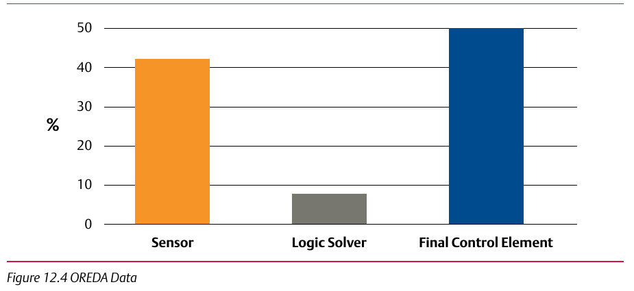
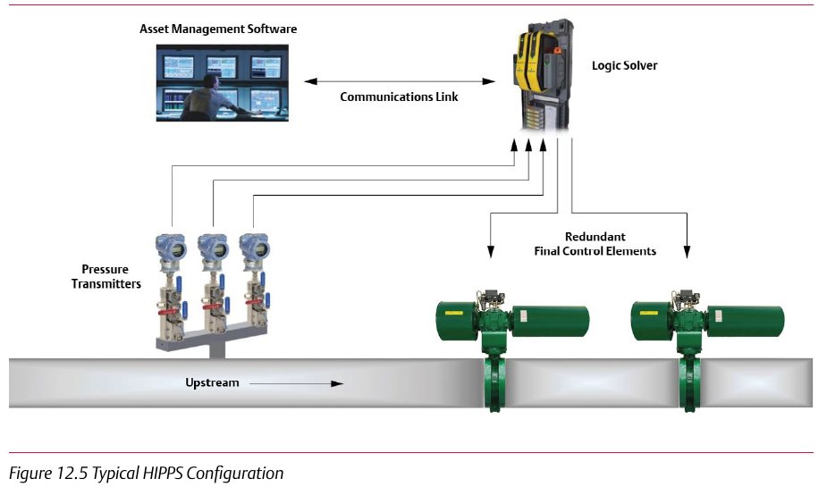

Activity: Architect the Voting Configuration


Given a required SIL/PFDavg/RRF target and the OREDA failure-distribution data, architect a voting configuration (sensor count/voting, final-element redundancy) that meets the target, and justify where the redundancy budget went using the failure data — not evenly splitting redundancy across all three components by default. Component Index: cvh-cmp-sil-pfd-rrf-table, cvh-cmp-oreda-failure-data-chart, cvh-cmp-hipps-typical-configuration.